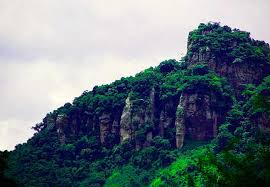
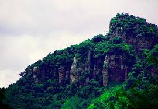

CHONTALES
Pueblo de afuera o extranjero.
El ganadero departamento de Chontales se encuentra en la franja central del territorio nicaragüense, en un extenso paisaje de planicies y mesetas interrumpidas por elevaciones escarpadas como la Serranía de Amerrisque y los cerros de la Cordillera Chontaleña. Aunque poco conocida en materia turística, la región cuenta con numerosos atractivos naturales, arqueológicos, históricos, paisajísticos y de agroproducción en toda su extensión.
La oferta de servicios turísticos comienza a ser desarrollada y la infraestructura de hoteles y restaurantes es apta para la recepción de visitantes. Chontales tiene una amplia costa en el Lago Cocibolca o Lago de Nicaragua, de bellos atardeceres y vistas a la Isla de Ometepe.
Están allí varios sitios de gran atractivo y otros poco explorados. Cerca de Juigalpa se ubica el pequeño pueblo de Puerto Diaz, frente al que están varias islas.
El ecoturismo, también tiene potencial de desarrollo, principalmente en los remanentes boscosos de la cordillera Amerrique y las partes costeras del Lago de Nicaragua.
La cordillera de Amerrisque es una cordillera montañosa que constituye la espina central de Nicaragua y forma parte de la Cordillera Centroamericana que se extiende a lo largo de Nicaragua durante unos 700 km desde Honduras en el noroeste hasta Costa Rica en el suroeste, justo a unos pocos kilómetros del Mar Caribe.
Ha sido declarada Reserva Natural, se alza en promedio 994 metros sobre el nivel del mar, en cuyas alturas el viento sopla fuerte y hay aire puro. Allí se establecieron los mayas, pueblo que dejó un legado histórico y antropológico.
 Cordillera ChontaleñaLa Cordillera
Chontaleña es una cordillera de origen volcánico ubicada en el centro de Nicaragua. Sirve de divisoria entre los ríos que discurren hacia el mar
Caribe, como el Punta Gorda, el Rama, el Mico y el Siquia, y los que desembocan en el lago de Nicaragua, como el Acoyapa y el Tule."/>
Cordillera ChontaleñaLa Cordillera
Chontaleña es una cordillera de origen volcánico ubicada en el centro de Nicaragua. Sirve de divisoria entre los ríos que discurren hacia el mar
Caribe, como el Punta Gorda, el Rama, el Mico y el Siquia, y los que desembocan en el lago de Nicaragua, como el Acoyapa y el Tule."/>
.